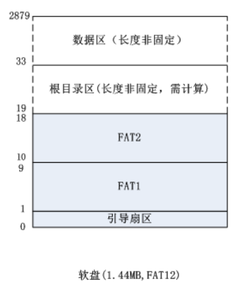
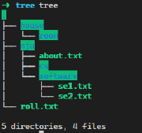
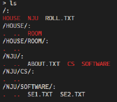
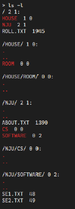
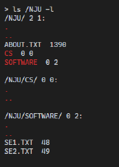
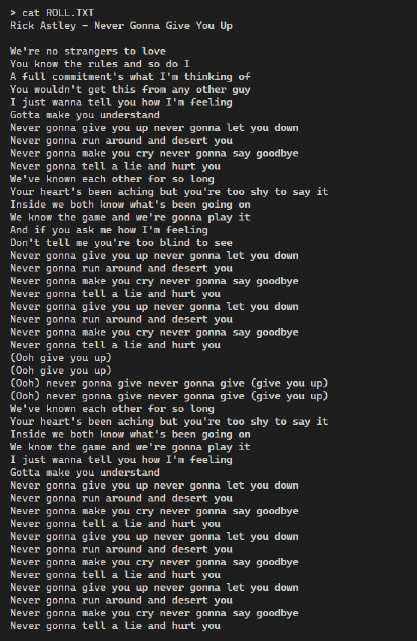

FAT12文件相关
FAT12概念相关
1、基本概念
FAT12是DOS时代就开始使用的文件系统(File System)，直到现在仍然在软盘上使用，FAT12软盘的被格式化后为：有两个磁头，每个磁头80个柱面（磁道），每个柱面有18个扇区，每个扇区512个字节空间。所以标准软盘的总空间为：2(磁头/盘面)×80(柱面)×18(扇区)×512bytes(扇区大小)=1474560 bytes=1440×1024 bytes=1.44MB
其结构如下：

2、引导扇区
基本概念
操作系统之所以认识FAT12格式的磁盘，其秘密就在于逻辑0扇区这512B上。如果这512字节的最后两个字节的内容分别是55和AA（0xAA55低字节在前，高字节在后)的话，BIOS在启动时会将这个扇区读取到0:7C00h-0:7DFFh处，然后跳转到0:7C00h处继续执行指令，操作系统即用此来达到引导系统的目的，而这个磁盘就称为引导磁盘。
具体结构
| 标识 | 偏移量 | 类型 | 大小（B） | 说明 | 默认值 |
|---|---|---|---|---|---|
| BS_jmpBOOT | 0 | db | 3 | 跳转指令 | |
| BS_OEMName | 3 | db | 8 | 厂商名 | |
| BPB_BytePerSec | 11 | dw | 2 | 每扇区字节数（Bytes/Sector） | 0x200 |
| BPB_SecPerClus | 13 | db | 1 | 每簇占用扇区数（Sector/Cluster） | 1 |
| BPB_RsvdSecCnt | 14 | dw | 2 | 保留扇区数即MBR所占扇区数 | 1 |
| BPB_NumFATs | 16 | db | 1 | FAT表的记录数 | 2 |
| BPB_RootEntCnt | 17 | dw | 2 | 最大根目录文件数 | 0xe0 |
| BPB_TotSec16 | 19 | dw | 2 | 逻辑扇区总数 | 0xb40 |
| BPB_Media | 21 | db | 1 | 媒体描述符(磁盘类型标识符) | 0xf0 |
| BPB_FATSz16 | 22 | dw | 2 | 每个FAT占用的扇区数 | 9 |
| BPB_SecPerTrk | 24 | dw | 2 | 每个磁道扇区数（Sector/track） | 12h=18 |
| BPB_NumHeads | 26 | dw | 2 | 磁头数 | 2 |
| BPB_HiddSec | 28 | dd | 4 | 隐藏扇区数 | 0 |
| BPB_TotSec32 | 32 | dd | 4 | 如果BPB_TotSec16为0，则使用此处扇区总数 | 0 |
| BS_DrvNum | 36 | db | 1 | 中断13的驱动器号 | 0 |
| BS_Reserved1 | 37 | dd | 4 | 卷序列号 | 0 |
| BS_BootSig | 38 | db | 1 | 扩展引导标志 | 0x29 |
| BS_VolID | 39 | dd | 4 | 卷序列号 | 0 |
| BS_VolLab | 43 | db | 11 | 卷标，必须是11个字符，不足填充空格 | |
| BS_FileSysType | 54 | db | 8 | 文件系统类型，必须为8个字符，不足填充空格 | FAT12 |
| 62 | 448 | 引导代码，由偏移0处跳转而来 | |||
| 510 | dw | 2 | 系统引导标识，第510字节为0x55，第511字节为0xAA | 0xaa55 |
标识解释
**
BS_jmpBoot**：是跳转指令，偏移0处的跳转指令必须是合法的可执行的基于x86的CPU指令，如：jmp start，这样可以生成3字节长的指令，（加关键字short的短跳转指令的长度是2字节），指向操作系统引导代码部分。Windows和MS-DOS生成的FAT12启动扇区中的跳转指令是短跳转，如：jmp short LABEL_START，然后加一个nop的空指令来保持3字节的长度。**
BPB_BytsPerSec**：每扇区的字节数，类型是双字节长，标准分区上的每扇区字节数一般是512B， FAT12的格式下设置为512(0x200h)。**
BPB_SecPerClus**：每簇扇区数，偏移13处，类型是字节，簇是数据存储的最小单位，在FAT12格式下一般为1，即每簇只有1个扇区(512字节)。簇越大，那么分区的容量也就越大，通过增加簇的扇区数，可以支持更大的磁盘分区，标准的簇大小为1、2、4、8、16、32、64和128，FAT12格式下只能管理 212个212个 簇(4096)，所以在FAT12格式下能管理和分配的最大空间为：4096×1×512=2097152B=2M，所以FAT12一般只适合3.5寸高密度软盘(1.44M)。
**
BPB_RsvdSecCnt**： ，即保留扇区数。保留扇区指的是在第一个FAT文件分配表之前的引导扇区，一般情况下只保留1个扇区(512B)。**
BPB_NumFATs**：共有多少个FAT表，默认情况下此字段的值为2，也就是有两个FAT表，FAT1和FAT2的内容相同，当FAT1表出错的时候可以使用FAT2来恢复文件分配表。*
BPB_RootEntCnt**：根目录文件数最大值，默认为224，每个目录条目占用32B的空间，因此根目录的大小为：22432/512=14，即占用14个扇区。**
BPB_TotSec16**：逻辑扇区总数，类型是双字节，如果此磁盘的逻辑扇区总数大于2^16(65536) 位的话，就设置此字段为0，然后使用偏移32处的双字来表示逻辑总扇区数。**
BPB_Media**：是单字节长的磁盘类型标识符，使用0f0h表示3.5寸高密码软盘，用0f8h来表示硬盘。此字段主要用于FAT12或FAT16的分区格式中，在Windows 2000中未使用。**
BPB_FATSz16**：每个FAT占用的扇区数=0x9=9，即FAT1占用1—9逻辑扇区，FAT2占用10—18逻辑扇区。根目录扇区位置=FAT表数量FAT表所占用的扇区数量+隐藏扇区数量
用户数据开始位置=根目录扇区位置+根目录所占用扇区(FAT12格式下为224*32/512)
此处所说的扇区指的是逻辑(线性)扇区，需要通过转换才能得到CHS磁盘参数，然后通过CHS参数来读写磁盘扇区。
**
BPB_SecPerTrk**：每磁道扇区数=0x12=18，即标准FAT12文件系统中，每个磁道的扇区数就是为18。**
BPB_NumHeads**：磁头数=0x2=2，该磁盘包括2个磁头，也就是面数是2。**
BPB_HiddSec**：在引导扇区之前的隐藏扇区，在 FAT12 格式上此字段默认为 00 ，即不隐藏任何扇区，此字段参与计算根目录区和用户数据区位置。**
BPB_TotSec32**：此分区或磁盘的逻辑扇区总数大于6553665536 则用这个字段来表示逻辑扇区总数，否则设置此字段为0后用位于偏移19处的双字节字段BPB_FATSz16来表示。
代码实现
typedef unsigned char uchar;
typedef unsigned short ushort;
typedef unsigned int uint;
struct BPB {
ushort BytePerSec; //每扇区字节数
uchar SecPerClus; //每簇扇区数
ushort RsvdSecCnt; //Boot记录占用的扇区数
uchar NumFATs; //FAT表个数
ushort RootEntCnt; //根目录最大文件数
ushort TotSec16; //扇区总数
uchar Media; //介质描述符
ushort FATSz16; //FAT扇区数
ushort SecPerTrk; // 每磁道扇区数
ushort NumHeads; //磁头数（面数）
uint HiddSec; //隐藏扇区数
uint TotSec32; //如果BPB_FATSz16为0，该值为FAT扇区数
};3、FAT表
FAT1和FAT2是两个完全相同的FAT表，每个FAT占用9个扇区。其中FAT1占用1—9扇区，FAT2占用10—18扇区。为了防止存储空间的碎片化，人们设计了一种链式存储方法。 但是这种方法对于文件内容的随机访问而言，其查找效率是很低的，因而又增加了一个 FAT(File Allocation Table) 查找表的概念，专门用一块空间记录各个文件对于簇的使用情况。
在保留区之后就是 FAT 表区，FAT表的数量由保留区中字段BPB_NumFATs来决定，一般都会有两个 FAT 表。其中一个表用作备份，当一个表所在扇区损坏时，还可以从备份中获取数据。
4、根目录区
基本概念
根目录区的开始扇区号是19，它是由若干个目录条目(Directory Entry)组成，条目最多有BPB_RootEntCnt个，由于根目录区的大小是依赖于BPB_RootEntCnt的，所以长度不固定。
在本FAT12中，因为BPB_RootEntCnt=0xE0=1416+0=244，即条目最多为244个，又因为每个条目占用32个字节，故24432/512=14，即该根目录区占14个扇区，即19—32。
其结构如下
| 名称 | 偏移 | 长度 | 描述 |
|---|---|---|---|
| DIR_Name | 0 | 11 | 文件名8个字节，扩展名3个字节，文件名不够8字节用空格0x20填充 |
| DIR_Attr | 0x0B | 1 | 文件属性，卷标项是0x28，文件项是0x20，目录是0x10 |
| Reserve | 0x0C | 10 | 系统保留使用 |
| DIR_WrtTime | 0x16 | 2 | 最后修改时间 |
| DIR_WrtDate | 0x18 | 2 | 最后修改日期 |
| DIR_FstClus | 0x1A | 2 | 此条目对应开始的簇号 |
| DIR_FileSize | 0x1C | 4 | 文件大小 |
代码实现
typedef unsigned char uchar;
typedef unsigned short ushort;
typedef unsigned int uint;
struct RootEntry {
uchar Name[11];
uchar Attr; //文件属性
char reserved[10];
ushort WrtTime;
ushort WrtDate;
ushort FstClus; //开始簇号
uint FileSize;
};实验相关
实验要求
用C/C++和nasm编写一个FAT12镜像查看⼯具，读取一个.img格式的文件并响应用户输入。
功能列表
- 运行程序后，读取FAT12镜像文件，并提示用户输入指令
- 用户输入ls 路径，输出根目录及其子目录的文件和目录列表。
- 首先输出路径名，加一个冒号:，换行，再输出文件和目录列表；
- 使用红色(\033[31m)颜色输出目录的文件名，不添加特殊颜色输出文件的文件名。
- 当用户不添加任何选项执行ls命令时，每个文件/目录项之前用两个空格隔开
- 当用户添加-l为参数时，
- 在路径名后，冒号前，另输出此目录下直接子目录和直接子文件的数目，两个数字之间用空格连接。此两个数字不添加特殊颜色
- 每个文件/目录占据一行，在输出文件/目录名后，空一格，之后：
- 若项为目录，输出此目录下直接子目录和直接子文件的数目，两个数字之间用空格连接。此两个数字不添加特殊颜色
- 不输出.和..目录的子目录、子文件数目
- 若项为文件，输出文件的大小
- 若项为目录，输出此目录下直接子目录和直接子文件的数目，两个数字之间用空格连接。此两个数字不添加特殊颜色
- 对于-l参数用户可以在命令任何位置、设置任意多次-l参数，但只能设置一次文件名
- 直接子目录不计算.和..
- 当用户给出不支持的命令参数时，报错
- 当用户不设定路径时，默认路径为镜像文件根目录
- 用户输入cat 文件名，输出路径对应文件的内容， 若路径不存在或不是一个普通文件则给出提示，提示内容不严格限定，但必须体现出错误所在。
- 用户输入exit， 退出程序。
示例
假设镜像文件的结构如下图：

输入ls：

输入ls -l：

输入ls /NJU -l：

输入cat ROLL.TXT：

常见问题
以下命令均等价于ls /NJU -l：
- ls -l /NJU
- ls -ll /NJU
- ls -l /NJU -ll
以下命令为出错：
- ls -L /NJU
- ls -al /NJU
- ls /NJU -lL
- ls /NJU /NJU
直接子文件/目录即不计算自己的子目录的子文件/目录的数量
ls中列出多个目录时，其顺序不做规定，每个目录的子文件/目录列表中的各个项的顺序不做规定
程序由两个源文件构成，main.c(cpp) 和 my_print.asm， 其中main.c(cpp) 是主程序，可以使用C/C++库，但是输出不能使用库函数，要求在my_print.asm中使用汇编编写函数用于输出。
要求使用Makefile编译链接项目。
Windows 平台可使用CMake或其它构建⼯具。
.img文件的名称可以直接在代码中指定（俗称硬编码）。
要求根据FAT12文件系统格式直接读取.img中的⼆进制内容，不允许挂载镜像。
FAT12中名称均为大写，只需要输入为英文大写/数字的指定路径/文件名（即小写的文件/目录名为不存在），不考虑中文字符、不需要支持长文件名。
输入指令以回车符号结束，要求可以多次不断输入。
程序应该对用户错误的输入做出恰当的提示，指出错误所在，不能崩溃
cat命令支持输出超过 512 字节的文件
代码实现
makefile部分
main: main.cpp my_print.asm
nasm -f elf32 my_print.asm
g++ -m32 -std=c++11 main.cpp my_print.o -o main
./mainnasm部分
global myprint
section .text
myprint:
push ebp
mov ebp, esp
mov edx, [ebp+12]
mov ecx, [ebp+8]
mov ebx, 1
mov eax, 4
int 80h
pop ebp
retC++部分
#include <stdio.h>
#include <stdlib.h>
#include <string.h>
#include<iostream>
#include<string>
#include<sstream>
#include<vector>
using namespace std;
typedef unsigned char uchar;
typedef unsigned short ushort;
typedef unsigned int uint;
int BytePerSec; //每扇区字节数
int SecPerClus; //每簇扇区数
int RsvdSecCnt; //Boot记录所用的扇区
int NumFATs; //FAT表的记录数
int RootEntCnt;//最大根目录文件数
int FATSz;
int FAT_Base; //FAT表起始地址
int Root_Base;//根目录区起始地址
int Data_Base;//数据区起始地址
#pragma pack (1)//将结构体数据强制连续排列
struct BPB {
ushort BytePerSec; //每扇区字节数
uchar SecPerClus; //每簇扇区数
ushort RsvdSecCnt; //Boot记录占用的扇区数
uchar NumFATs; //FAT表个数
ushort RootEntCnt; //根目录最大文件数
ushort TotSec16; //扇区总数
uchar Media; //介质描述符
ushort FATSz16; //FAT扇区数
ushort SecPerTrk; // 每磁道扇区数
ushort NumHeads; //磁头数（面数）
uint HiddSec; //隐藏扇区数
uint TotSec32; //如果BPB_FATSz16为0，该值为FAT扇区数
};
struct RootEntry {
uchar Name[11];
uchar Attr; //文件属性
char reserved[10];
ushort WrtTime;
ushort WrtDate;
ushort FstClus; //开始簇号
uint FileSize;
};
#pragma pack ()//取消指定对齐
//此类用于存储读取出来的文件数据
class Node {
public:
string name; //文件/文件夹名字
vector<Node *> next; //下一级目录
string path; //记录路径
uint FileSize; //文件大小
bool isFile = false; //是否是文件
bool isVal = true; //是否是.和.. true不是
int file_count = 0; //下一级有多少文件
int dir_count = 0; //下一级多少目录
char *content = new char[5000]{};//文件内容记录
};
extern "C" void myprint(const char *, const int);
void ReadBPB(FILE *fat12, struct BPB *pbp); //读取BPB
void ReadRoot(FILE *fat12, struct RootEntry *rootEntry_ptr, Node *fatherNode); //读取文件
bool isFileName(uchar *name);//判断是否为文件名
void GetFileName(char *re, uchar *name);//获得文件名字
void GetDirName(char *re, uchar *name); //获得目录名字
void ReadFileContent(FILE *fat12, int startClus, Node *sonNode);//读取文件
void ReadDirContent(FILE *fat12, int startClus, Node *fatherNode);//读取目录
int getFATEntry(FILE *fat12, int clusValue);//获得FATEntry项
void ReadCommon(FILE *fat12, RootEntry *entry, Node *reNode);//抽象封装读取操作
void operate(Node *root);//获得操作
string getVec(int be, int af, string ss);//指令解析
void PrintAll(Node *root);//单纯的ls操作
void PrintL(Node *root); // ls -l操作
void PrintLP(Node *root, string path, bool findL, bool &fa);//带有路径的ls
void PrintCat(Node *root, string path);//cat
int main() {
FILE *fat12;
fat12 = fopen("a.img", "rb"); //打开FAT12的映像文件
struct BPB bpb;
struct BPB *bpb_ptr = &bpb;
ReadBPB(fat12, bpb_ptr);
BytePerSec = bpb_ptr->BytePerSec;
SecPerClus = bpb_ptr->SecPerClus;
RsvdSecCnt = bpb_ptr->RsvdSecCnt;
NumFATs = bpb_ptr->NumFATs;
RootEntCnt = bpb_ptr->RootEntCnt;
FATSz = bpb_ptr->FATSz16;
FAT_Base = RsvdSecCnt * BytePerSec;
Root_Base = (RsvdSecCnt + NumFATs * FATSz) * BytePerSec;
Data_Base = (RsvdSecCnt + NumFATs * FATSz + (RootEntCnt * 32 + BytePerSec - 1) / BytePerSec) * BytePerSec;
struct RootEntry rootEntry;
struct RootEntry *rootEntry_ptr = &rootEntry;
//创建根节点
Node *root = new Node();
root->name = "";
root->path = "/";
ReadRoot(fat12, rootEntry_ptr, root);
operate(root);
fclose(fat12);
}
void ReadBPB(FILE *fat12, struct BPB *pbp) {
fseek(fat12, 11, SEEK_SET);
fread(pbp, 1, 25, fat12);
}
void ReadRoot(FILE *fat12, struct RootEntry *rootEntry_ptr, Node *fatherNode) {
for (int i = 0; i < RootEntCnt; i++) {
fseek(fat12, Root_Base + i * 32, SEEK_SET);
fread(rootEntry_ptr, 1, 32, fat12);
if (rootEntry_ptr->Name[0] == '\0') continue;
ReadCommon(fat12, rootEntry_ptr, fatherNode);
}
}
bool isFileName(uchar *name) {
for (int i = 0; i < 11; ++i) {
//判断是否均为数字或者字母
if (!((name[i] >= '0' && name[i] <= '9')
|| (name[i] >= 'a' && name[i] <= 'z')
|| (name[i] >= 'A' && name[i] <= 'Z')
|| name[i] == ' ')) {
return false;
}
}
return true;
}
void ReadFileContent(FILE *fat12, int startClus, Node *sonNode) {
int currentClus = startClus;
int tempCount = 0;
char *p = sonNode->content;
if (startClus == 0) return;
while (tempCount < 0xFF8) {
tempCount = getFATEntry(fat12, currentClus);
if (tempCount == 0xFF7) {
myprint("Bad Clus\n", 9);
break;
}
char *str = (char *) malloc(SecPerClus * BytePerSec);
char *content = str;//使用动态数组记录内容
fseek(fat12, Data_Base + (currentClus - 2) * SecPerClus * BytePerSec, SEEK_SET);
fread(content, 1, SecPerClus * BytePerSec, fat12);
for (int i = 0; i < SecPerClus * BytePerSec; ++i) {
*p = content[i];
p++;
}
free(str);
currentClus = tempCount;
}
}
void ReadDirContent(FILE *fat12, int startClus, Node *fatherNode) {
int currentClus = startClus;
int tempCount = 0;
while (tempCount < 0xFF8) {
tempCount = getFATEntry(fat12, currentClus);
if (tempCount == 0xFF7) {
myprint("Bad Clus\n", 9);
break;
}
for (int co = 0; co * 32 < SecPerClus * BytePerSec; co++) {
RootEntry sonEntry;
RootEntry *sonEntry_ptr = &sonEntry;
fseek(fat12, Data_Base + (currentClus - 2) * SecPerClus * BytePerSec + co * 32, SEEK_SET);
fread(sonEntry_ptr, 1, 32, fat12);
if (sonEntry_ptr->Name[0] == '\0') continue;
ReadCommon(fat12, sonEntry_ptr, fatherNode);
}
currentClus = tempCount;
}
}
void GetFileName(char *re, uchar *name) {
int len = 0;
//文件名八个字节，扩展名三个字节
for (; len < 8; len++) {
if (name[len] == 0x20) {
break;
}
*(re + len) = name[len];
}
*(re + len) = '.';
len++;
for (int i = 8; i < 11; i++) {
if (name[i] == 0x20) {
break;
}
*(re + len) = name[i];
len++;
}
*(re + len) = '\0';
}
void GetDirName(char *re, uchar *name) {
int len = 0;
//文件名八个字节，扩展名三个字节
for (; len < 11; len++) {
if (name[len] == 0x20) {
break;
}
*(re + len) = name[len];
}
*(re + len) = '\0';
}
void ReadCommon(FILE *fat12, RootEntry *entry, Node *reNode) {
if (isFileName(entry->Name)) {
//目录
if (entry->Attr == 0x10) {
char FileName[12];
GetDirName(FileName, entry->Name);
Node *sonNode = new Node();
reNode->next.push_back(sonNode);
sonNode->name = FileName;
sonNode->path = reNode->path + FileName + "/";
reNode->dir_count++;
//方便后续输出
Node *q = new Node();
q->name = ".";
q->isVal = false;
sonNode->next.push_back(q);
q = new Node();
q->name = "..";
q->isVal = false;
sonNode->next.push_back(q);
ReadDirContent(fat12, entry->FstClus, sonNode);
} else {
char FileName[12];
GetFileName(FileName, entry->Name);
Node *sonNode = new Node();
reNode->next.push_back(sonNode);
sonNode->name = FileName;
sonNode->FileSize = entry->FileSize;
sonNode->isFile = true;
sonNode->path = reNode->path + FileName + "/";
reNode->file_count++;
ReadFileContent(fat12, entry->FstClus, sonNode);
}
}
}
int getFATEntry(FILE *fat12, int clusValue) {
fseek(fat12, FAT_Base + clusValue * 3 / 2, SEEK_SET);
ushort re;
//读取FAT项所在的两个字节
fread(&re, 1, 2, fat12);
//表从头开始按3字节分成一组，一组中第2字节的低半字节作为最高半字节和一组中第1字节组成整数表示一个簇号，
//第2字节的高半字节作为最低半字节和第3字节组成整数表示一个簇号。
// ushort结合存储的小尾顺序和FAT项结构可以得到
// clus是偶数项的话，取byte2的低4位和byte1构成的值，clus是奇数项的话，取byte2和byte1的高4位构成的值
if (clusValue % 2 == 0) {
re = re << 4;
return re >> 4;
} else {
return re >> 4;
}
}
void operate(Node *root) {
while (true) {
myprint(">",1);
string ss;
getline(cin, ss);
vector<string> input;
int be = 0;
int af = 0;
for (int i = 0; i < ss.size(); ++i) { //获取输入指令
if (ss[i] == ' ') {
af = i - 1;
input.push_back(getVec(be, af, ss));
be = af + 2;
}
}
input.push_back(getVec(be, ss.size() - 1, ss));
if (input[0] == "exit") {
return;
} else if (input[0] == "ls") {
if (input.size() == 1) { //全部输出
PrintAll(root);
} else {
bool findL = false;
bool findPath = false;
bool getError = false;
string path;
for (int i = 1; i < input.size(); ++i) {
if (input[i][0] != '-') {
if (findPath) {
string print_re = "Wrong Parameter!\n";
myprint(print_re.c_str(), strlen(print_re.c_str()));
// cout << print_re;
getError = true;
break;
} else {
findPath = true;
string temp = input[i];
if (temp.find('/') != 0) { //第一次找到 / 的不在0位置
temp = "/" + temp;
}
if (temp.rfind('/') != temp.size() - 1) { //最后一次找到 / 不在最后位置
temp += "/";
}
path = temp;
}
} else {
if (input[i].length() == 1) {
string print_re = "Wrong Parameter!\n";
myprint(print_re.c_str(), strlen(print_re.c_str()));
// cout << print_re;
getError = true;
break;
}
if (!input[i].find('l')) {
string print_re = "Wrong Parameter!\n";
myprint(print_re.c_str(), strlen(print_re.c_str()));
// cout << print_re;
getError = true;
break;
}
findL = true;
}
}
if (getError) continue;
bool fa = false;
if (findL && !findPath) { //ls -l
PrintL(root);
fa = true;
} else if (!findL && findPath) { //ls /Dir
PrintLP(root, path, findL, fa);
} else if (findL && findPath) { //ls /Dir -l
PrintLP(root, path, findL, fa);
} else {
PrintAll(root);
continue;
}
if(!fa){
string print_re = "No such Dir!\n";
myprint(print_re.c_str(), strlen(print_re.c_str()));
// cout<<print_re;
}
}
} else if (input[0] == "cat") {
if (input.size() == 2 && input[1][0] != '-') {
string path;
string temp = input[1];
if (temp.find('/') != 0) { //第一次找到 / 的不在0位置
temp = "/" + temp;
}
if (temp.rfind('/') != temp.size() - 1) { //最后一次找到 / 不在最后位置
temp += "/";
}
path = temp;
PrintCat(root, path);
} else {
string print_re = "Wrong Parameter!\n";
myprint(print_re.c_str(), strlen(print_re.c_str()));
}
} else {
string print_re = "Wrong Instructions!\n";
myprint(print_re.c_str(),strlen(print_re.c_str()));
// cout<<print_re;
}
}
}
void PrintAll(Node *root) {
Node *p = root;
string print_re;
if (p->isFile) return;
print_re = p->path + ":\n";
myprint(print_re.c_str(), strlen(print_re.c_str()));
// cout << print_re;
Node *q;
for (int i = 0; i < p->next.size(); i++) {
q = p->next[i];
if (q->isFile) {
print_re = q->name + " ";
myprint(print_re.c_str(), strlen(print_re.c_str()));
// cout << print_re;
} else {
print_re = "\033[31m" + q->name + "\033[0m" + " ";
myprint(print_re.c_str(), strlen(print_re.c_str()));
// cout << print_re;
}
}
myprint("\n", 1);
// cout << "\n";
for (int i = 0; i < p->next.size(); ++i) {
if (p->next[i]->isVal) {
PrintAll(p->next[i]);
}
}
}
void PrintL(Node *root) {
Node *p = root;
string print_re;
if (p->isFile) return;
print_re = p->path + " " + to_string(p->dir_count) + " " + to_string(p->file_count) + ":\n";
myprint(print_re.c_str(), strlen(print_re.c_str()));
// cout << print_re;
Node *q;
for (int i = 0; i < p->next.size(); ++i) {
q = p->next[i];
if (q->isFile) {
print_re = q->name + " " + to_string(q->FileSize) + "\n";
myprint(print_re.c_str(), strlen(print_re.c_str()));
// cout << print_re;
} else {
if (q->isVal) {
print_re =
"\033[31m" + q->name + "\033[0m" + " " + to_string(q->dir_count) + " " +
to_string(q->file_count) +
"\n";
// cout << print_re;
myprint(print_re.c_str(), strlen(print_re.c_str()));
} else {
print_re = "\033[31m" + q->name + "\033[0m" + " \n";
myprint(print_re.c_str(), strlen(print_re.c_str()));
// cout << print_re;
}
}
}
myprint("\n",1);
cout << "\n";
for (int i = 0; i < p->next.size(); ++i) {
if (p->next[i]->isVal) {
PrintL(p->next[i]);
}
}
}
void PrintLP(Node *root, string path, bool findL,bool &fa) {
if (path == root->path) { //路径相同
if (root->isFile) {
string print_re = "File can not open!\n";
myprint(print_re.c_str(), strlen(print_re.c_str()));
// cout << print_re;
return;
} else {
fa = true;
if (findL) {
PrintL(root);
} else {
PrintAll(root);
}
}
return;
}
if (path.length() <= root->path.length()) {
return;
}
if (path.substr(0, root->path.length()) == root->path) { //例如 ls /NJU/ROOT 进行部分对比相同则向下一个节点寻找
// for (Node *q:root->next) {
// PrintLP(q, path, findL,fa);
// }
for (int i = 0; i < root->next.size(); ++i) {
PrintLP(root->next[i],path,findL,fa);
}
}
}
void PrintCat(Node *root, string path) {
if (path == root->path) {
if (root->isFile) {
if (root->content[0] != 0) {
myprint(root->content,strlen(root->content));
myprint("\n",1);
// cout << root->content;
}
return;
} else {
string print_re = "File can not open!\n";
myprint(print_re.c_str(), strlen(print_re.c_str()));
return;
}
}
if (path.length() <= root->path.length()) {
string print_re = "No such Dir!\n";
myprint(print_re.c_str(), strlen(print_re.c_str()));
// cout << print_re;
return;
}
if (path.substr(0, root->path.length()) == root->path) { //例如 cat /NJU/ROOT 进行部分对比相同则向下一个节点寻找
// for (Node *q:root->next) {
// PrintCat(q, path);
// }
for (int i = 0; i < root->next.size(); ++i) {
PrintCat(root->next[i],path);
}
}
}
string getVec(int be, int af, string ss) {
string temp = "";
for (int i = be; i <= af; ++i) {
temp += ss[i];
}
return temp;
}